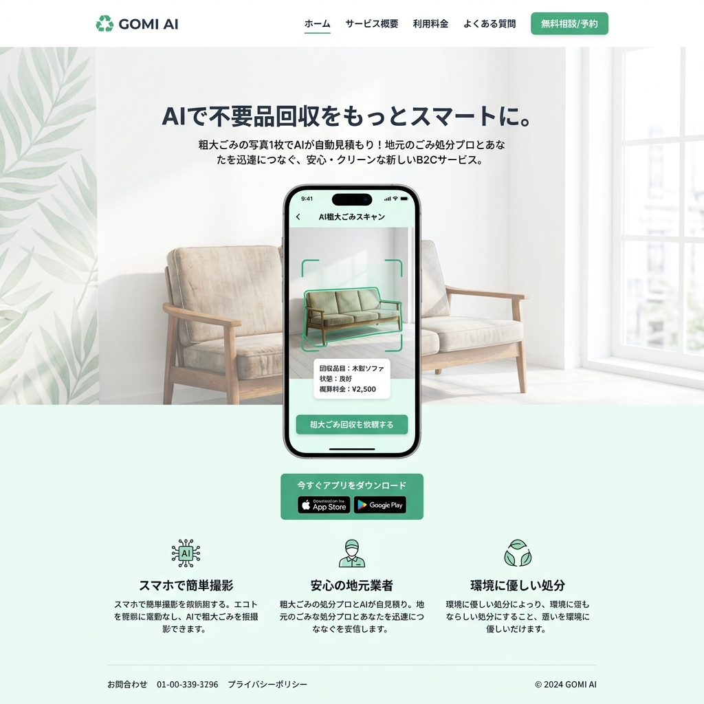

街のゴミを撮るだけで、
街が少し綺麗になる。
不法投棄や溢れるゴミ箱。SNAP-TRASHは、市民がスマホでゴミの写真を撮るだけでAIが種類と位置を特定し、自治体の清掃ルートを最適化する「市民参加型・環境浄化プラットフォーム」です。

自治体の目が届かない「街の死角」
限られた予算と人員で、街のすべての路地裏をパトロールすることは不可能です。その結果、放置された粗大ゴミは新たな不法投棄を呼び込み、治安の悪化（割れ窓理論）を引き起こします。解決の鍵は、数万人の「市民の目」をセンサー化することです。
写真を「清掃タスク」に変換するAI
AIゴミ種別判定
市民が撮影した画像をAIが瞬時に解析。「可燃ゴミ」「ビン・カン」「粗大ゴミ（不法投棄）」を自動判別し、必要な回収車両を特定します。
GPSマッピングと緊急度スコアリング
位置情報とともに、「交通の妨げになるか」「悪臭の可能性があるか」をAIがスコア化し、自治体のダッシュボードへリアルタイムで緊急度順にリスト化します。
ゲーミフィケーション報酬システム
投稿したゴミが回収されると、ユーザーに「クリーン・トークン」が付与されます。トークンは地域通貨や協賛企業のクーポン（コーヒー1杯など）と交換可能。
清掃ルートの動的最適化アルゴリズム
「毎週火曜日に全ルートを回る」という非効率なゴミ収集は過去のものです。SNAP-TRASHのデータに基づき、ゴミが溜まっている場所だけを巡回する「ダイナミック・ルーティング」を生成。清掃車両のCO2排出量とガソリン代を大幅に削減します。
企業のCSR活動（ボランティア）との連携
自治体だけでなく、地域の企業が「スポンサー」としてエリアの清掃活動を支援する仕組み。社員の週末のボランティア清掃をアプリで可視化し、ESG投資家向けのレポートとして自動出力する機能も備えています。
Case Study | 関東のベッドタウン（人口30万人）
試験導入から半年間で、市民から1万件以上のゴミ報告が集まりました。ゲーム感覚で参加する若年層が増え、特に河川敷の不法投棄の早期発見・撤去率が300%向上。市はパトロールの委託費用を年間2,000万円削減することに成功しました。
「誰かがやる」を、「みんなでやる」へ
テクノロジーは魔法ではありませんが、人々の行動を変えるトリガーになります。私たちは、一人ひとりの小さな「気づき」を集約し、地球全体をクリーンにする巨大な力へと変換します。